수업은 그대로.
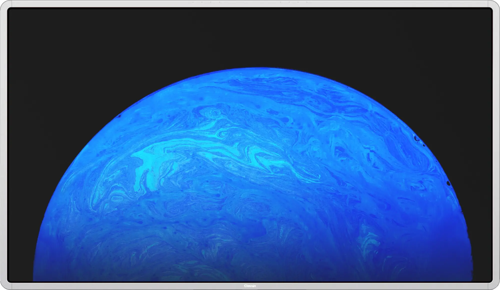
원장님 수업은
오늘 가져오신 수업 하나가 15분 뒤, 원장님 휴대폰에 도착해 있을 겁니다.
어느 학원이나 그랬습니다.
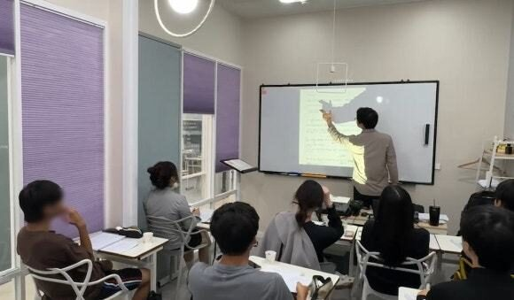
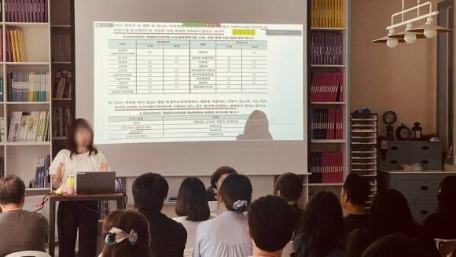
학원이 커질수록
녹화 올리기, 보강 잡기, 자료 찾기, 온라인 학생 연결. 매주, 반마다 반복됩니다.
예시 규모
수업이 끝나면
결석한 학생은 같은 수업을 다시 듣지 못하고, 강사님이 떠나면 자료도 함께 떠납니다.
클래스인은 세 가지를 맞춥니다.
윈도우 PC가 칠판 안에 들어 있어 노트북도 HDMI도 없이 수업이 시작됩니다.
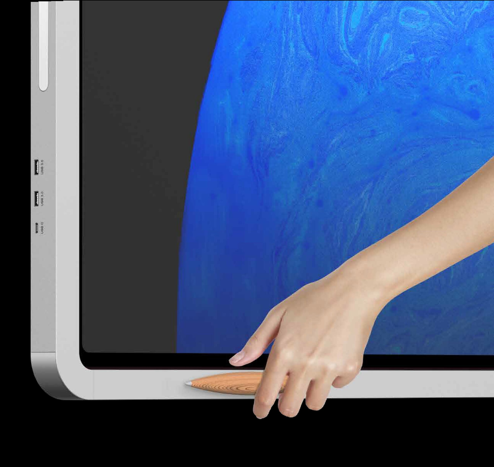
수업 자료는 학원 공유 드라이브에. PDF·PPT는 칠판에서 바로 열고, 지난 판서는 EDB 파일로 그대로 불러옵니다.
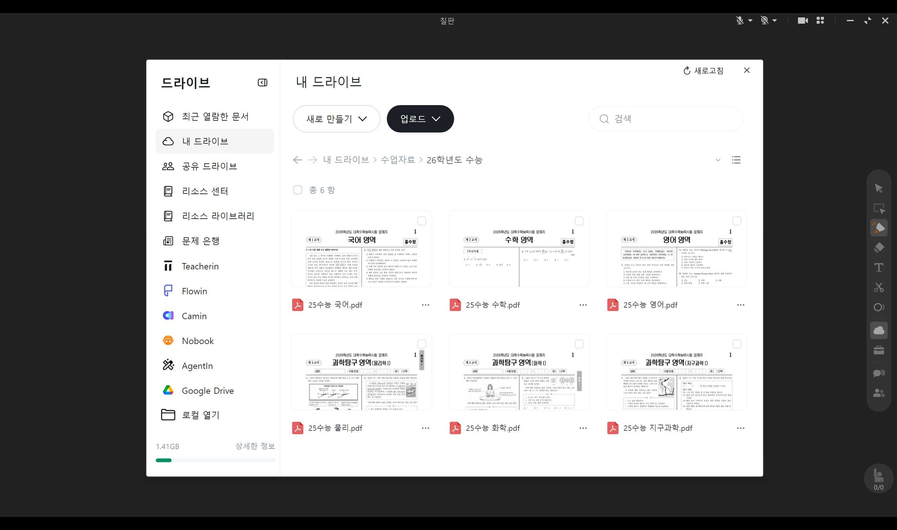
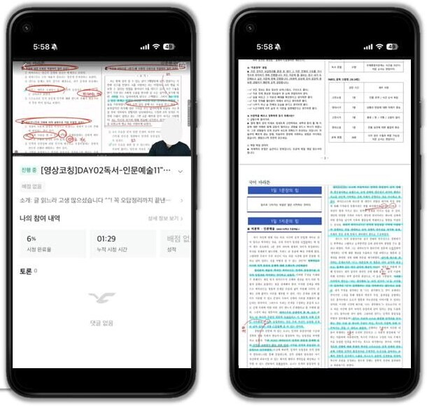
가져오신 수업 자료로 판서하고, 수업을 마쳐 보세요.
같은 교실.
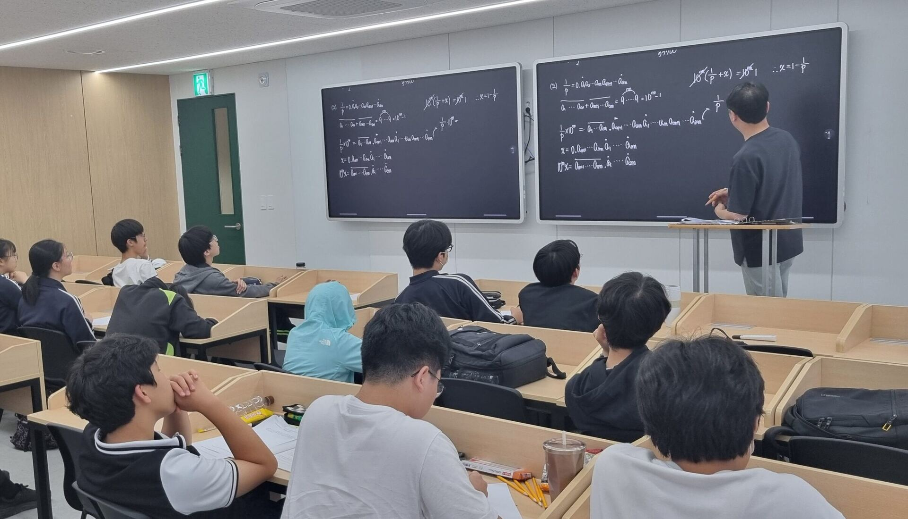
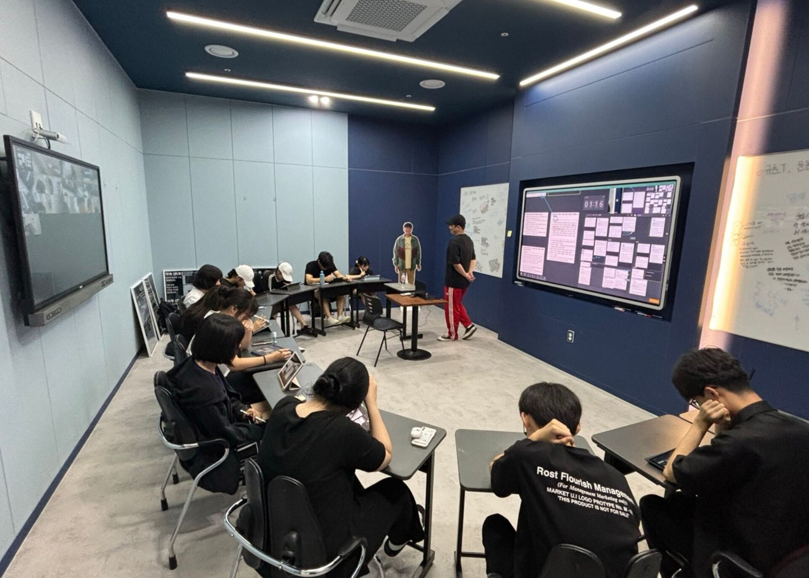
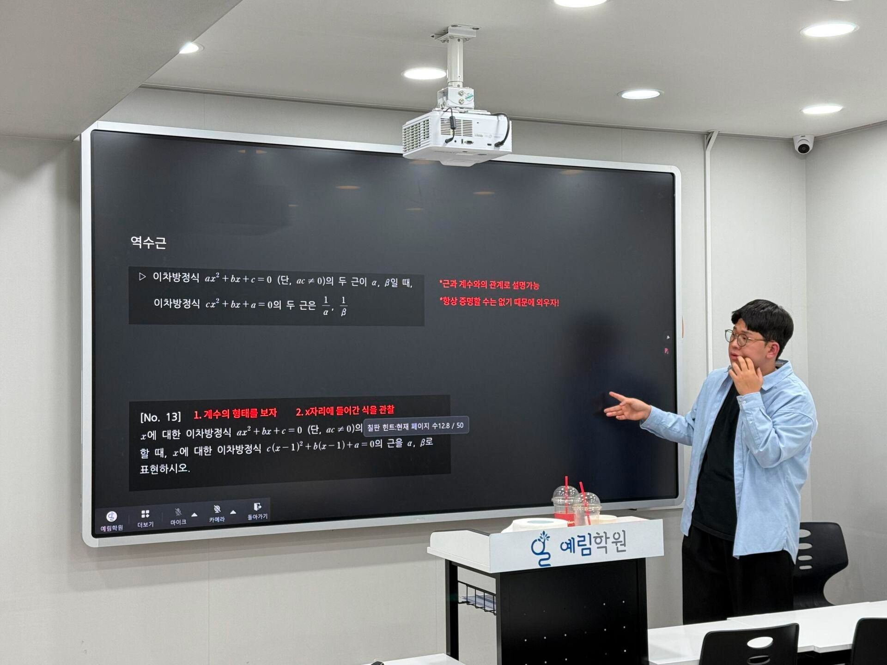
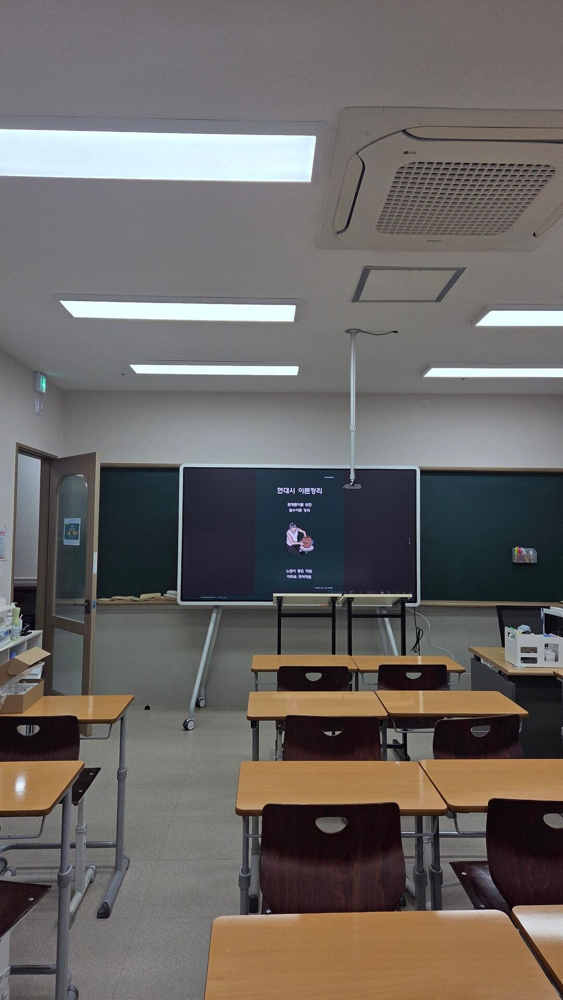
보는 수업에서
강사와 학생이 같은 칠판에 쓰고, 학생 개인 칠판의 풀이를 한 화면에서 봅니다.
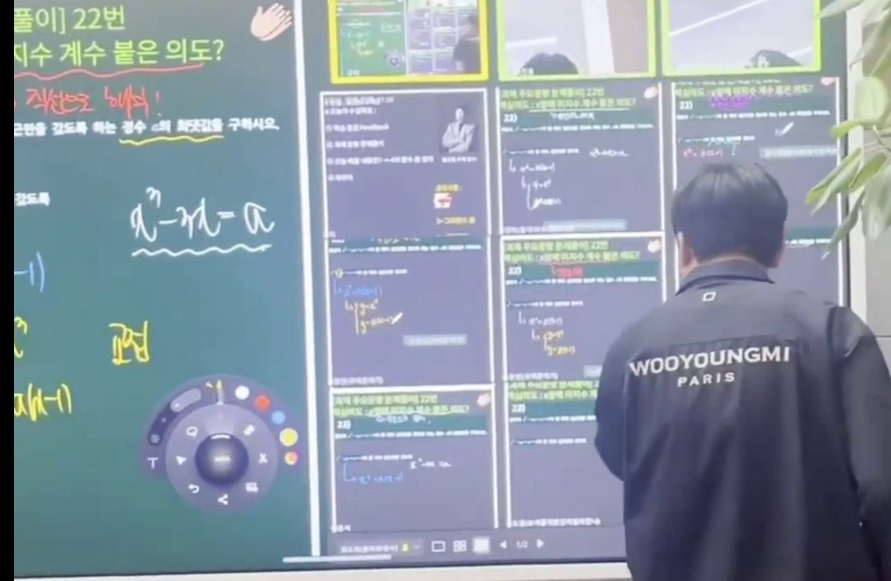
원장님 휴대폰이 학생 자리입니다.
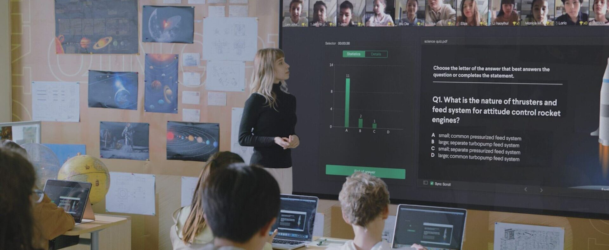
온라인과 오프라인,
추적 카메라와 천장 마이크가 교실을 그대로 담고, 온라인 학생은 같은 칠판으로 들어옵니다. 지점과 온라인 반도 같은 수업을 받습니다.
원장님은
원장 · 실장 · 강사 · 지점별로 볼 수 있는 범위를 나눠 권한대로 확인합니다.
그리고 강사님이 바뀌어도, 교안과 녹화는 학원에 남습니다.
말 "반이 60개면 원장님이 다 들어가 보실 수 없죠. 학부모 전화가 오기 전에 화면에서 먼저 봅니다." → 클릭 → "에이스 강사님의 판서와 녹화가 다음 강사님의 교안이 됩니다."세계 교실에서 먼저.
전 세계 누적 · EEO 공식 소개 기준
전부 바꾸지 않습니다.
판서는 하시던 그대로. 보통 3~4개월, 규모가 크면 6개월 이상 단계적으로 넓힙니다.
다음 교육은
지금 다 켜실 필요 없습니다. 필요해지는 날, 켜기만 하세요.
사람이 잇던 시간은
예시 · 강사 한 명이 녹화 올리기, 보강, 자료 찾기, 숙제 걷기에 쓰는 시간. 잠시 뒤 원장님 숫자로 바꿉니다.
학생 한 명이 남으면
2025 사교육비조사 수학 참여 학생 월평균 27.0만 원 × 12개월
원장님 학원은
처음 값은 예시입니다. 말씀해 주신 숫자로 바꿔 보세요. 본전은 견적과 함께 계산해 드립니다.
?t=30&h=4&s=15를 붙이면 미리 채워진다(파일로 열 때).15분 전 그 수업,
수업은 그대로.
Empowering Education
EEO ClassIn Korea · 서울 목동 쇼룸